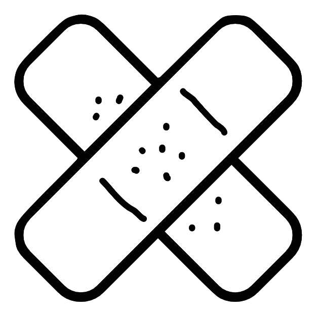

Meet Mawell
Your Healthcare Assistant
Click Maxwell in the corner to begin.
Try phrases such as "I cut my foot" or "I burned my arm"
Phone: 415-570-9351
Google Assistant by searching "Maxwell AI"
DISCLAIMER: Maxwell is an AI trained to respond with the Red Cross Organization's recommended steps to treat an injury.
If injury is severe, always contact emergency services